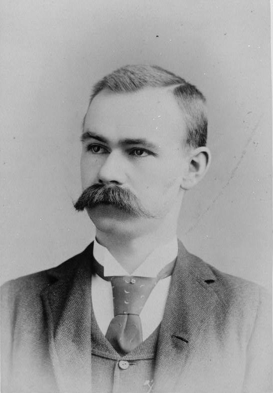
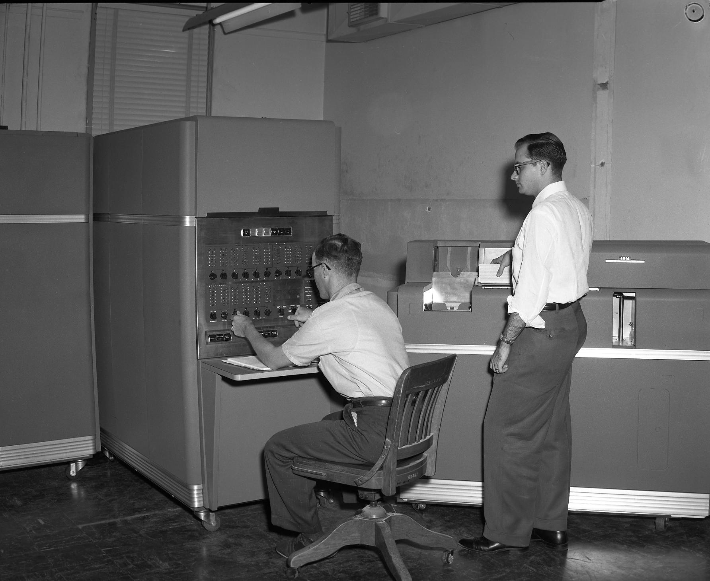
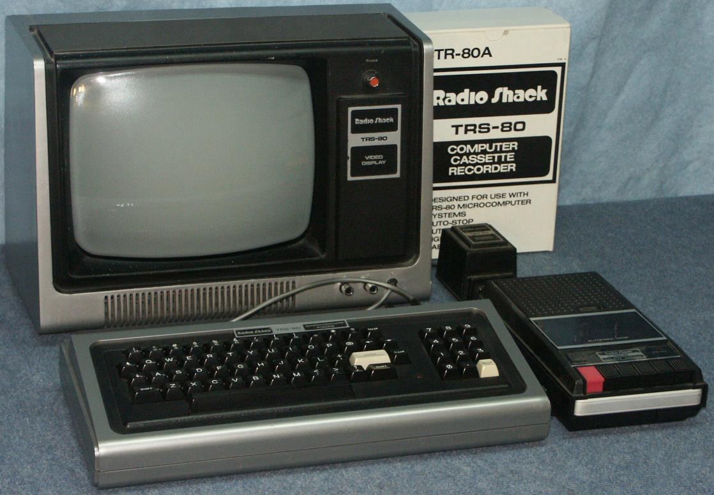

The history of computing started a long time ago as early as 500 B.C. when the first Chinese abacus was invented. Abacus is a word derived from the Greek word “Abax” meaning “Calculating Board” or “Calculating Table”. Some people refer it as the first computing device. The abacus can multiply, divide, add, subtract. The abacus is still used today in many Asian communities roughly 2,500 years after it was first invented.
In the late 1800’s Herman Hollerith invented the standard punch card. The punch card was first used by the several states and the New York Board of Health for vitalstatistic tabulation. Herman’s idea was based off the Jaqcuard Loom system which was asystem to simplify the process of manufacturing textiles with complex patterns. The Jaqcuard Loom also inspired Charles Babbage to use punch cards to control the sequence of computations in his proposed analytical engine.

Konrad Zuse was an inventor, civil engineer, and computer engineer. Zuse invented the first programmable computer. He also founded one of the first companies to produce computers. The Z4 was the world’s first commercial computer produced by Zuse’s company. His work went unnoticed in the United Kingdom and United States because of World War II.
IBM was the first company to build an automatic digital computer in 1944. It was called an Automatic Sequence Controlled Calculator. It could do multiplications in 6 seconds and additions in 1/3rd of a second. IBM also made the IBM 650 and it was the most popular computer in the 1950’s. In 1960 IBM designed the most powerful scientific computer of its time.

The first Microcomputer was the made by MITS in 1971. MITS the company that founded it sold thousands before 1974 but due to the price drop in calculator prices. But in 1975 H. Edward Roberts, the Florida-born former U.S. Air Force officer headed to MITS and later designed a smaller more affordable computer called the Altair 88oo. He hoped to break even by selling 200. He had over 4,000 orders within 3 months. His kit did not have much external memory, a printer, keyboard, or other input device.
One of the earliest personal microcomputers ever released was the TRS-8o. The TRS-8o was launched in 1977 by the Tandy Corporation. They sold the TRS-8o through Radio Shack. The name TRS-8o was abbreviated from Tandy/Radio Shack, Z-8o microprocessor. By 1979 It had the largest selection of computer software in the microcomputer market. It stayed the best-selling pc line outselling the apple series II by a factor of 5 until 1982. Due to FFC regulations the TRS-8o series came out with the TRS-8o Model III that met all regulation standards.
Overall the history of computing is very old and is always progressing the farther we go into the future. Computing started out with just making calculations and now is so advanced that new computers, smart phones, TV’s, and etc. are being released every year. Computing will never stop advancing and there will always be people to further it.